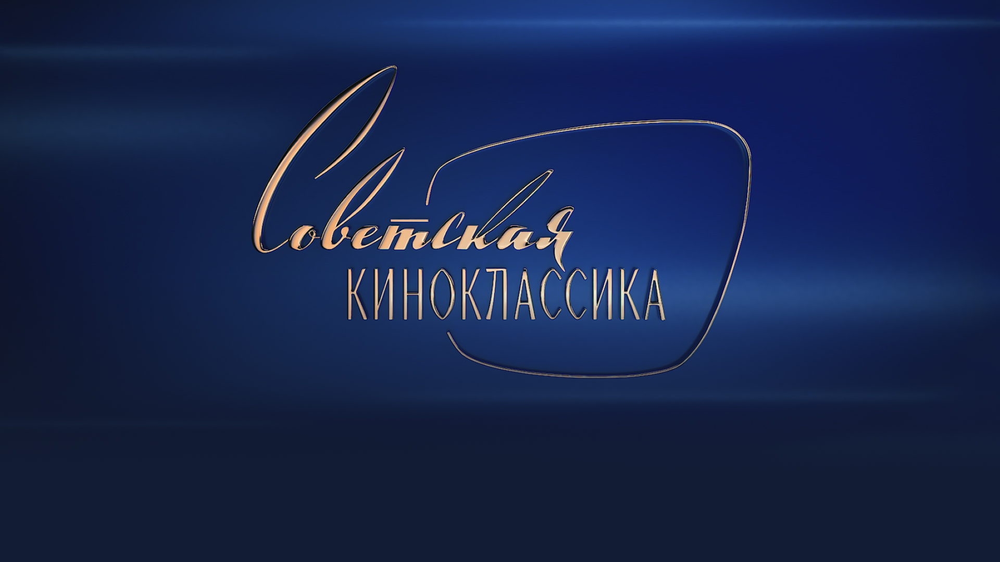

Триколор · 2024
Графическое оформление телеканала «Советская киноклассика»
К запуску канала Триколора «Советская киноклассика» создали логотип, заставки, анонсы и эфирный пакет.
Для запуска «Советской киноклассики» на Триколоре мы разработали айдентику и эфирный пакет. Глубокая сине-золотая цветовая гамма подчеркнула дух советской культурной эпохи, сочетая ностальгию, интеллигентность и уважение к кино. А каллиграфический логотип стал визуальной метафорой киноклассики — искренней, выразительной и созданной с вниманием к форме и смыслу.
